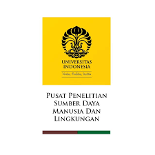
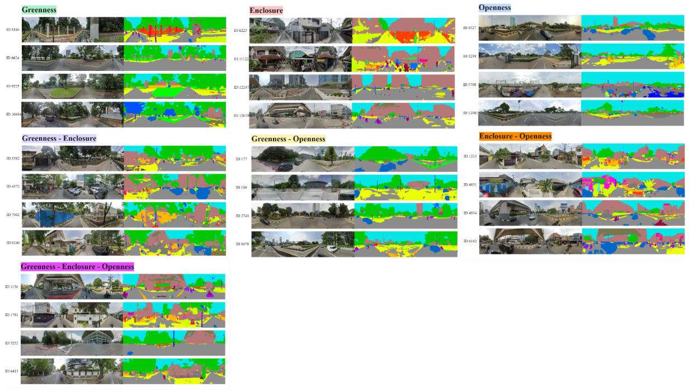
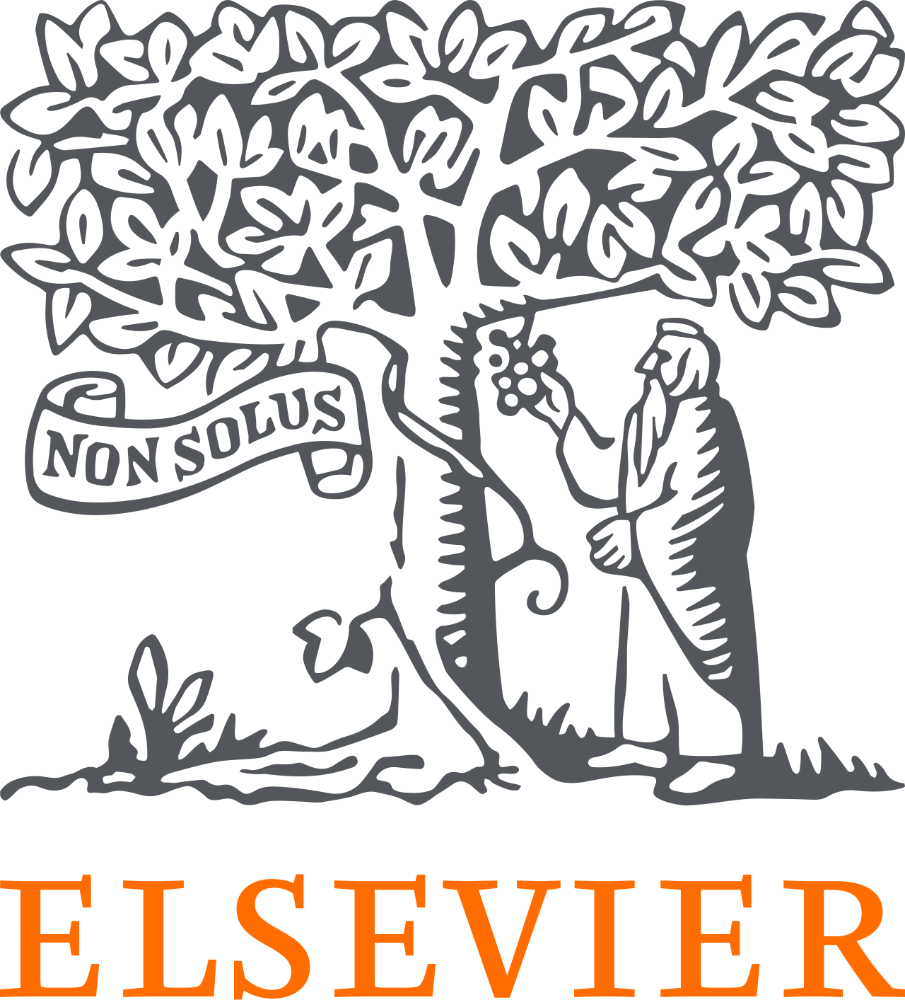

I am a Researcher at the SMART CITY, Universitas Indonesia, with a background in Geography and expertise in geospatial analytics. My research focuses on urban issues using geospatial tools and data-driven approaches, including GIS, street-view imagery, and other spatial datasets. I apply these methods to analyze urban environments, planning challenges, and environmental dynamics, aiming to generate insights that support more sustainable, resilient, and evidence-based urban development.
Education
Master of Science (M.Sc.) in Geography Sciences 2023 – 2025
Universitas Indonesia [Summa Cum Laude]
Focus: Human Data-Driven GIS & Street-view imagery Application for Urban Contexts and Landscape
Thesis: Spatial Modeling of Visual Element Proportion Diversity in Urban Spaces Based on Street-view and Spatial Indicators (Case Study: Kebayoran Baru and Tanah Abang)
Bachelor of Science (B.Sc.) in Geography 2020 – 2023
Universitas Indonesia [Cum Laude]
Focus: GIS & Remote Sensing
Thesis: Protection Level for Fire Prone Areas in East Jakarta City
Experience
Oct 2024 – Present
Researcher
SMART CITY, Universitas Indonesia
Conduct urban and environmental research using geospatial analysis, GIS, street-view application and spatial modeling to support urban planning related studies initiatives.
May 2025 – Present
Project Researcher
Department of Geography, Universitas Indonesia
Lead a university-funded research project examining climate resilience in urban green spaces by developing analytical frameworks linking spatial environments with human perception and place attachment.
Mar 2025 – Dec 2025
Cartographer
Strategic Environmental Assessment Team, West Bangka Regency - Affiliated with PPSML UI
Produced 50+ thematic maps and managed spatial datasets to support Strategic Environmental Assessment and inform regional environmental planning and policy decisions.

Jun 2024 – Oct 2024
Research Assistant
SMART CITY, Universitas Indonesia
Supported urban research projects through GIS-based spatial analysis, remote sensing, and project coordination while contributing to technical reports and academic outputs.
Jun 2024 – Aug 2024
Teaching Assistant
Department of Geography, Universitas Indonesia
Assisted in teaching GIS and remote sensing practical courses by guiding students in spatial analysis exercises and supporting course evaluation.
Mar 2024 – Oct 2024
Cartographer
Strategic Environmental Assessment Team, Bangka Belitung Islands Province - Affiliated with PPSML UI
Developed 40+ thematic maps and spatial visualizations to support environmental assessment and improve communication of regional spatial data.
Jun 2023 – Dec 2024
Student Researcher
Department of Geography, Universitas Indonesia
Conducted GIS-based research analyzing urban fire risk patterns in East Jakarta through spatial analysis, field surveys, and academic dissemination.
Projects

Prompting Sustainability: A Comparative Analysis of How Generative AI Interprets and Visualizes Urban 'Sustainable' Streetscapes [🌐PROJECT PAGE]
Examines how generative AI models interpret and visualize sustainable urban streetscapes through prompt-based analysis, evaluating how AI-generated imagery reflects principles of sustainable urban design and planning.
Cooling Cities, Warming Communities: Quantifying Climate Resilience in Urban Parks Through Anthropomorphic Mapping and Place Attachment
Investigates climate resilience in urban green spaces by integrating anthropomorphic mapping, place attachment analysis, and street-view imagery to understand the relationship between human perception and adaptive urban landscape design.

Spatial Modeling of Visual Element Proportion Diversity in Urban Spaces Based on Street-view and Spatial Indicators Completed
Analyzed the spatial diversity of urban visual elements using street-view imagery, computer vision, and GIS-based spatial indicators to quantify greenness, openness, and enclosure, providing insights for walkability, visual comfort, and climate-responsive urban planning.
The Impedance of East Jakarta Road Network to Estimate Fire Station Service Areas Completed
Developed a GIS-based network analysis model to evaluate road network impedance and estimate fire station service coverage for improving urban emergency response planning.
Publications
Journal Articles
[1]
Pradana, M.R., Dimyati, M. & Gamal, A. (2025). Harmonizing street-view semantics and spatial predictors for dominant urban visual composition modelling.
https://doi.org/10.1007/s43762-025-00210-z[2]
Pradana, M.R., Wibowo, A., & Semedi, J.M. (2025). Multi-Perspective Evaluation of Urban Green Views: Spatial and Street-View Data Integration in Sudirman Central Business District, Indonesia.
https://doi.org/10.7494/geom.2025.19.3.91[3]
Pradana, M.R., Dimyati, M. & Semedi, J.M. (2025). Unveiling greenery and visual comfort: Integrating Green View Index and image segmentation in panoramic rural landscapes.
https://doi.org/10.2478/geosc-2025-0011[4]
Gamal, A., Pradana, M.R., Wibisono, B.H., Navitas, P., & Aryal, J. (2025). Thematic Fragmentation and Convergence in Urban Flood Simulation Research: A 45-Year Bibliometric Mapping.
https://doi.org/10.3390/urbansci9070280[5]
Pradana, M.R., & Dimyati, M. (2024). Tracking Urban Sprawl: A Systematic Review and Bibliometric Analysis of Spatio-Temporal Patterns Using Remote Sensing and GIS.
https://doi.org/10.48088/ejg.m.pra.15.3.190.203[6]
Semedi, J.M., Pradana, M.R., Putera, D.A., & Rahatiningtyas, N.S. (2024). The Impedance of East Jakarta Road Network to Estimate Fire Station Service Areas.
https://doi.org/10.23917/forgeo.v38i2.4408Conference Papers
[1]
Pradana, M.R., & Semedi, J.M. (2025). Effortless coastal monitoring: Unsupervised detection of shoreline alterations due to tin mining in Bangka Belitung.
https://doi.org/10.1088/1755-1315/1462/1/012004[2]
Ash-Shidiq, I.P., Supriatna, S., Darmawan, A., Warta, Z., Molidena, E., Valla, A., Hisan, Firdaus, M.I., Zakaria, N.A., Muafiroh, S., Pradana, M.R., & Putera, D.A. (2024). Biomass Stock Estimation Using Landsat 8 Imagery in Bukit Tigapuluh National Park, Riau.
https://doi.org/10.1088/1755-1315/1291/1/012019Peer Review Experiences

News